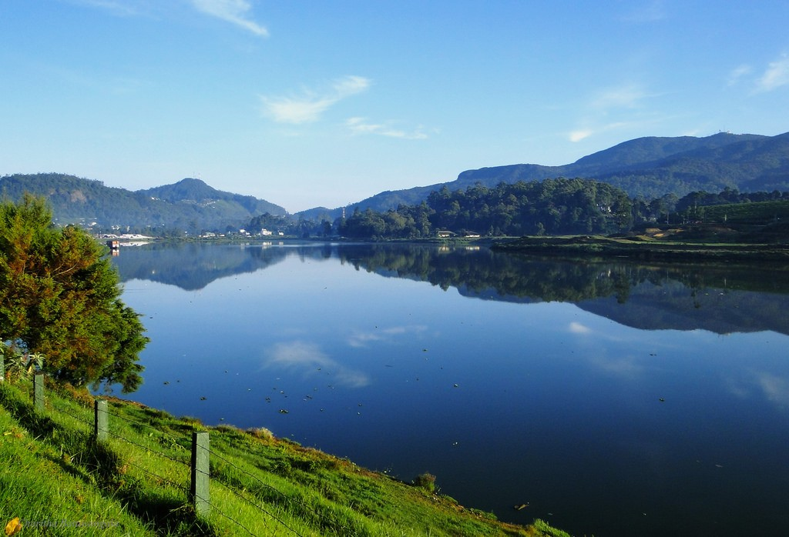

About Nuwara Eliya
Nestled amidst the emerald-clad hills of Sri Lanka's central highlands, Nuwara Eliya is a mesmerizing destination often referred to as the "Little England" of the island nation. With its cool climate, colonial-era architecture, and lush tea plantations, Nuwara Eliya has charmed travelers from all corners of the world. Let us embark on a journey of exploration to this enchanting paradise, discovering the myriad attractions that make Nuwara Eliya a must-visit destination.

The Colonial Charms

Gregory Lake

Victoria Park

Tea Estates and Factories